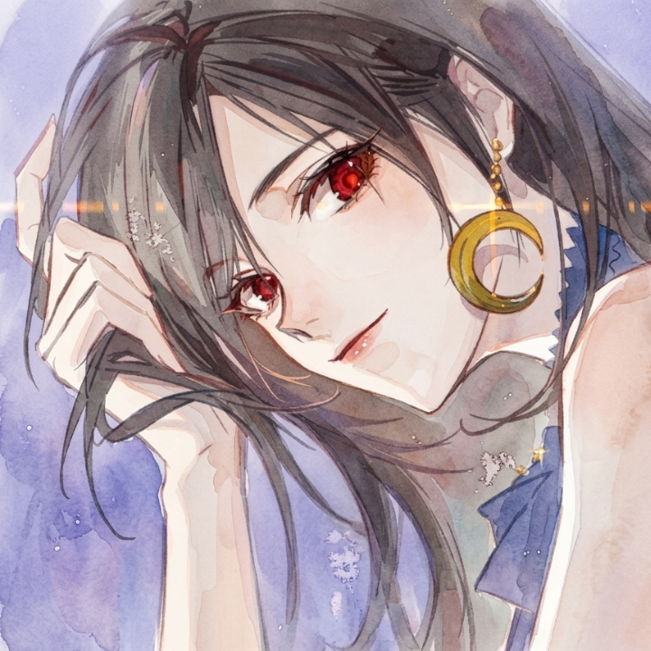
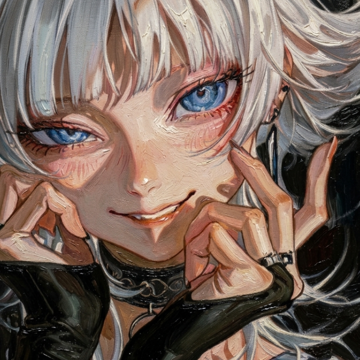
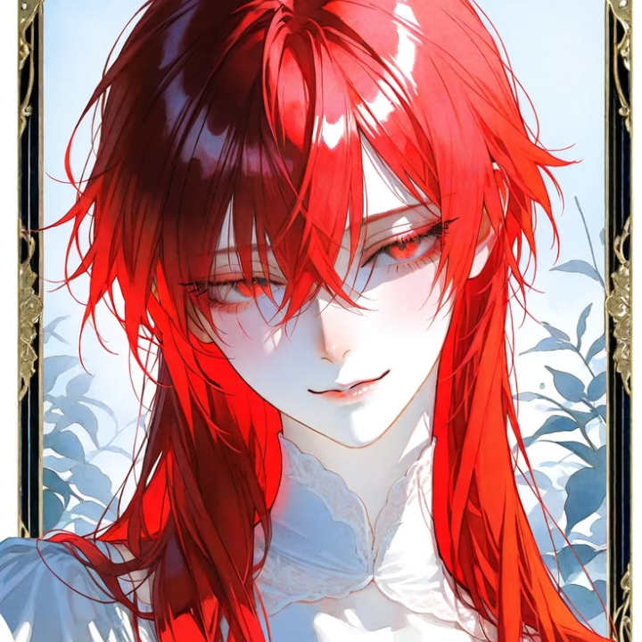
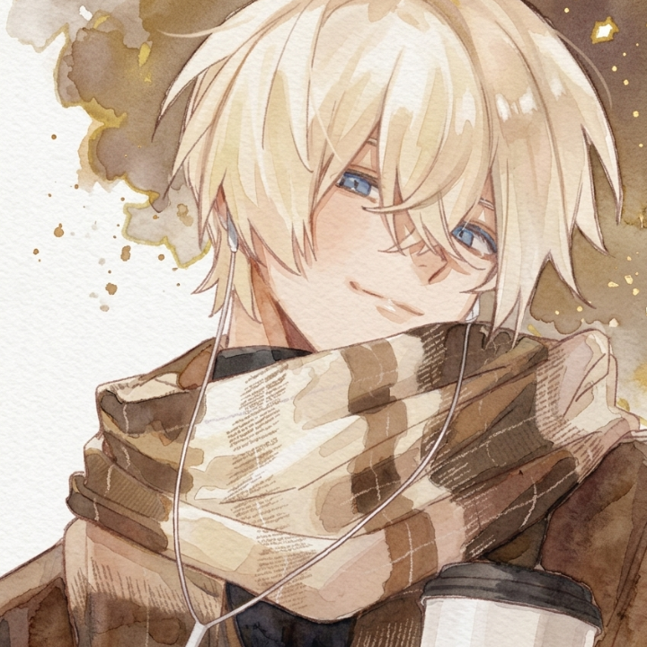

Arkha
Karakter utama

Maran
???
Rayas
Anggota Divisi 7
Faedil
Anggota Divisi 7
Xio
Anggota Divisi 7

Yume
???
Niff
Jendral Divisi 7
Nay
Letjen Divisi 6
Nana
Letjen Divisi 7
Kila
Cheater
Zuya
Jendral Divisi 4
Mauro
Cheater
Caesar
Cheater

Mita
Jendral Divisi 5
Pucie
???
Fazz
Anggota Divisi 7
Ken
Jendral Divisi 6

Zuma
Anggota Divisi 7